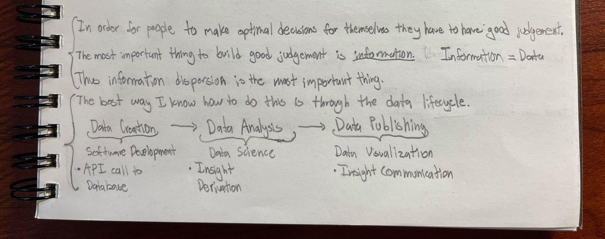

ASL Letter Translator
Convolutional Neural Network
Convolutional Neural Network
Still a Work in Progress!

Fully Featured Web App

Simple Feedforward Neural Network

Candian Election Results Effect on Demographic Data

Developed Web App as a Robo-Trading Algorithm Exploration Tool

Simple Risk & Return Analysis/Visualization of Technology Stocks

Self Taught Specific Skills and Concepts Through Personal Projects

Machine Learning - Regression & Multivariate Data Analysis
Decision Models & Analytics - Projects in Programming

Interesting Papers Written About Cool Areas of Research
My name is Hursh Desai and I am a recent graduate from the BPE program at NYU Stern.
I research a variety of topics outside of my career to support my ultimate goal of making the world an easier place to live in. This spans fields like philosphy, art, and AI.
Careerwise, I categorize my personal interests largely into two areas: software engineering and data analysis. Software engineering to build things that make people's lives easier. Data analysis to best learn what to build to make people's lives easier. These interests are largely where the projects on this page are borne from.
Soon after graduating I learned I can put these two disciplines together in the form of data engineering, where the analysis I was interested in doing could be made more efficient through automated ETL pipelines. This newfound symbiosis of my two interests was the impetus behind getting my Google Professional Data Engineer Certification.
Value of Data Engineering
